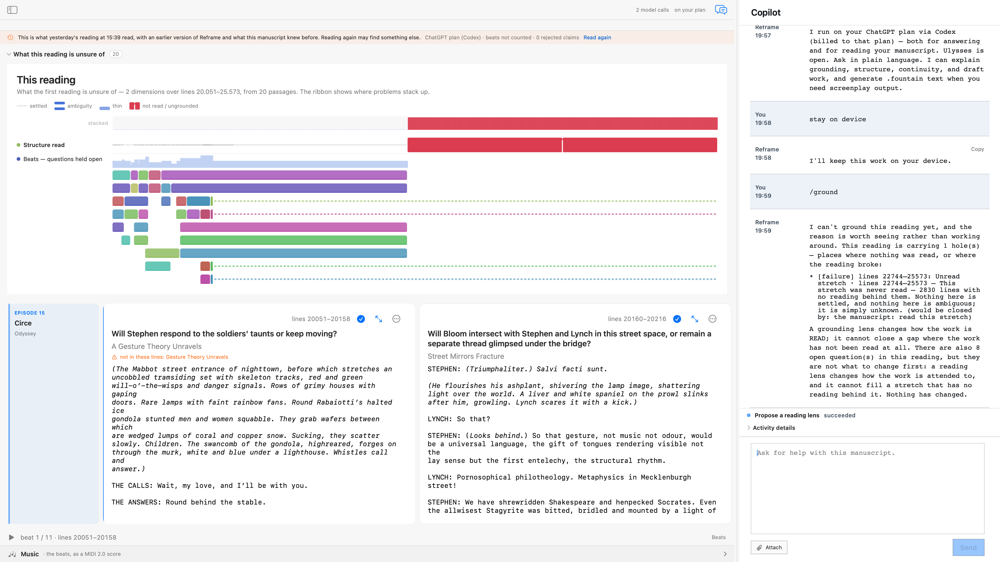

Nothing changed
The terminal capability aggregate recorded grounding.proposal=false, grounding.changed=false, and the named block grounding.blockedBy=readingHasHoles.
/groundPropose a reading lens — a change in what the next reading should look for — from what the current reading is actually unsure of. The proposal is an offer; nothing changes until the writer accepts it, and it never edits the manuscript.
Driven on the Circe chapter of Ulysses (episode 15, lines 20051–25573), the command declined to propose a lens: the reading was carrying an unread stretch of 2,830 lines. “A grounding lens changes how the work is READ; it cannot close a gap where the work has not been read at all.” Of the reading's two problems, only one is a lens problem — and the command refuses to dress the other up as one.

The terminal capability aggregate recorded grounding.proposal=false, grounding.changed=false, and the named block grounding.blockedBy=readingHasHoles.
No paid model call was recorded for the turn. The stance is derived from the persisted uncertainty score, not from a new reading.
Slash origin only. The natural-language origin and the accepted-lens path remain unproven, and the release allow-list stays empty.